In the digital age, editing is no longer just for pro designers. But did you know that what color you put in the background matters more than removing the background? This article starts from the basics and takes you into the heart of color theory, moving your photos from clean to moving.
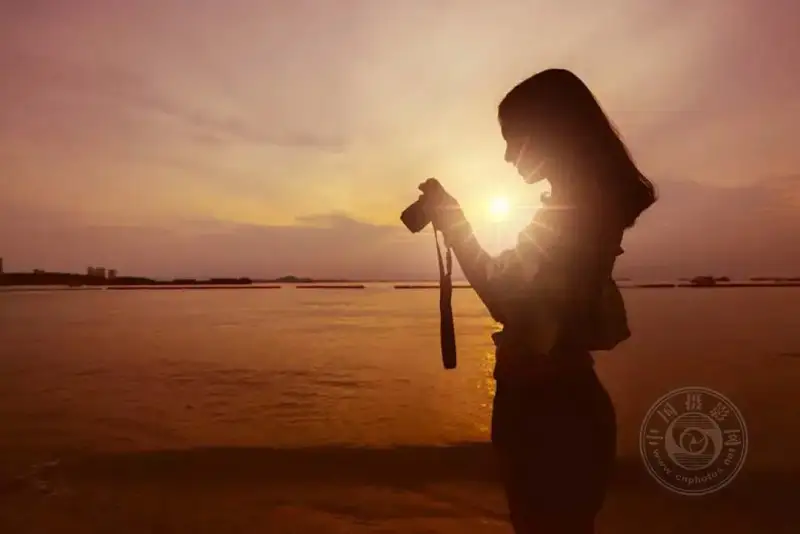
01 Why do your edited photos always fall short?
In the digital age, image editing is a skill many pros and enthusiasts need. Whether you are a photographer, graphic designer, online seller, or someone who simply likes to edit photos, masteringhow to remove the image backgroundbrings a real leap forward.
But removing the background is only the first step. The real magic happens when youchoose what color to fill that empty space.
Color is seen as the most useful tool in a photographer's hands. Through color theory, photography can convey information and evoke the intended emotion, and the viewer's eye is guided precisely where it should go.
Why is color so important in photography?
Well-chosen tones improve the image, highlight the subject, and set a mood. Different tones and light levels bring calm, joy, tension, or excitement, and they can create harmony or conflict in the frame. A carefully matched palette can turn an ordinary snapshot into a masterpiece.
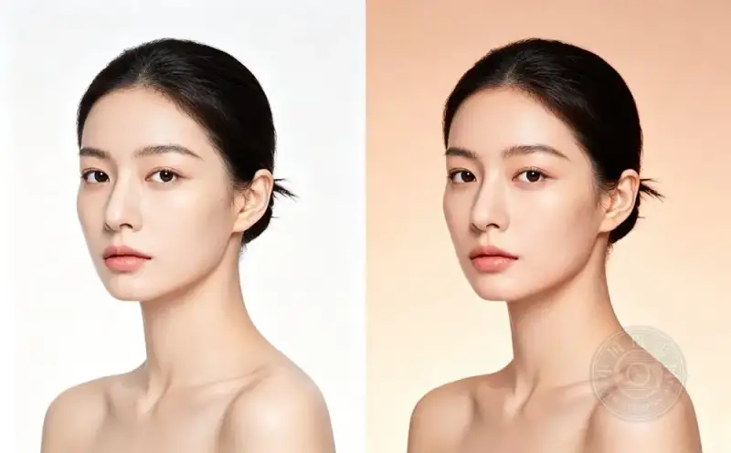
02 The color wheel: your pocket color guide
Color theory centers on the relations between tones and light levels. The key tool is thecolor wheel , arranged by how colors relate. Colors are usually split intoprimary, secondary, and tertiary colors main groups.
Knowing how these three relate is the key that opens color matching.
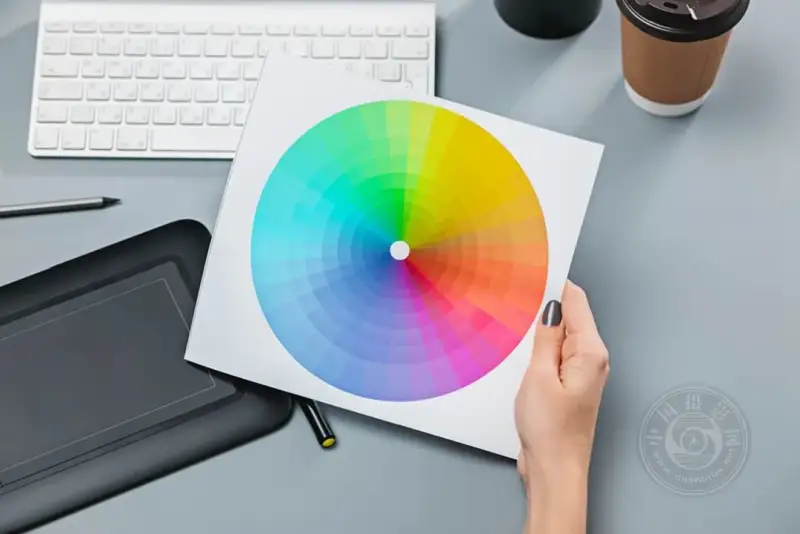
03 Primary colors: red, blue, yellow, one decisive hit
Primary-color work focuses on thered, blue, and yellow colors. These tones form strong contrast, draw attention fast, and are often used to set the visual focus of the frame.
｜Example 1: a bright red umbrella surrounded by golden leaves. The strong contrast of red and yellow grabs the viewer's eye at once and focuses it on the umbrella and what it suggests. This is common in fashion and visual storytelling.
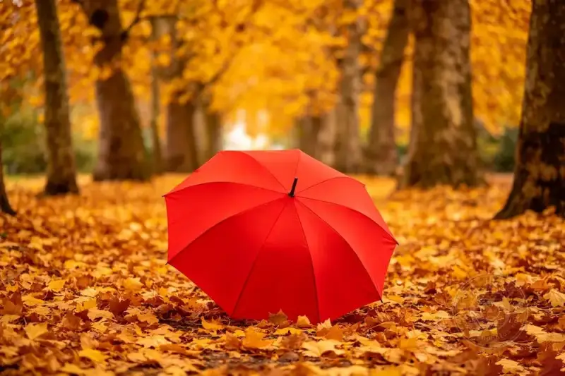
｜Example 2: a portrait where the subject wears a dark blue jacket against a simple background. The blue jacket makes the person stand out and sets off the best mood.
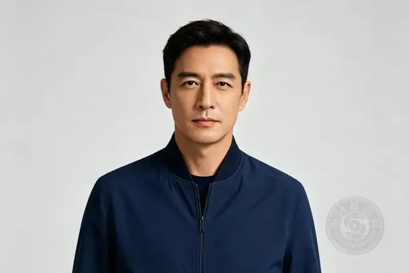
｜Example 3: a cityscape at dusk, as the blue sky turns to night and yellow lights fill the scene. Add a touch of red, such as a traffic light or a car, and you create contrast that shows the blend of natural and artificial light in the city.
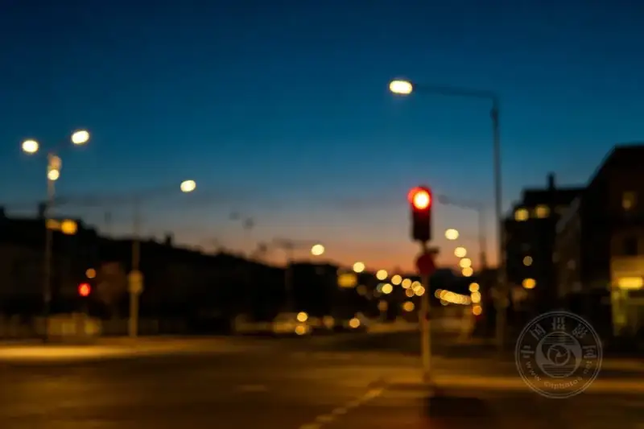
04 Secondary colors: make the subject pop
Mix two primary colors and you getgreen (blue plus yellow), orange (red plus yellow), and purple (red plus blue) , called secondary colors. Pair them with primaries for dramatic contrast.
｜Scene use: when editing on an iPhone, try a green subject against a red background to draw the eye to the subject. In product shots, secondary colors often make goods stand out without being too flashy.
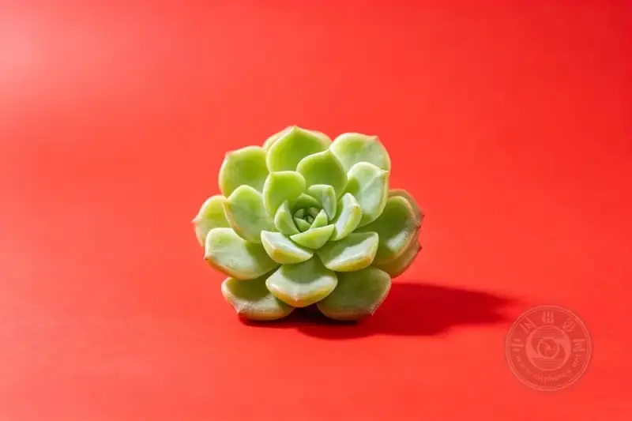
｜Natural shooting inspiration: shoot purple wildflowers against green grass. The flowers stand out yet blend in harmony with the green around them.
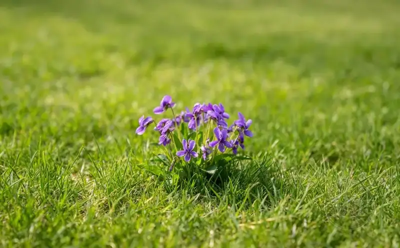
05 Tertiary colors: the secret of a refined feel
A tertiary color mixes a primary and a secondary, for examplered-orange, blue-green, and yellow-green . They harmonize and suit refined visual work, adding interest and layers.
｜Landscape photography: the golden glow of sunset (a mix of yellow and orange) blends with the green plants around it. Yellow-green grass answers the golden sky and sets a warm, pleasant mood.
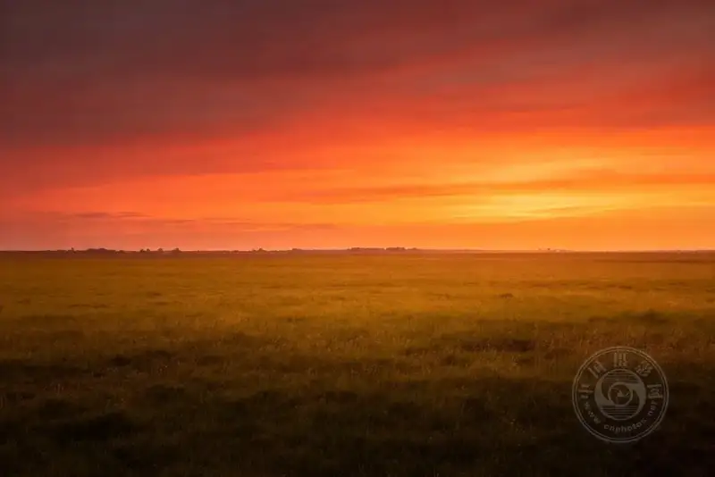
｜Interior photography: red-orange walls, a yellow-green wooden table, blue-purple cushions. This mix gives the viewer a comfortable, warm experience.
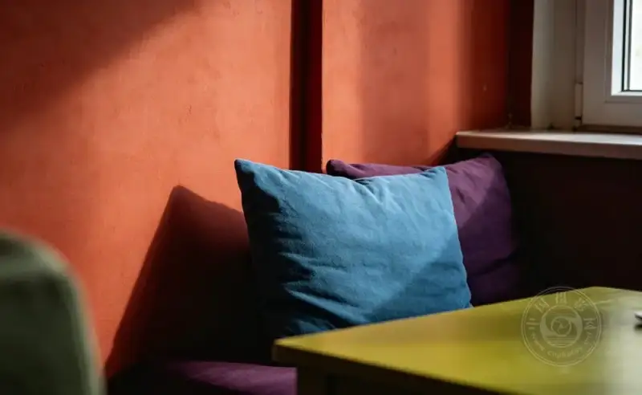
06 Three classic palettes, easy to learn
Complementary colors: the strongest visual impact
Complementary colors sit opposite each other on the wheel, for exampleorange and blue, purple and yellow . Used together, the colors look more vivid and lively.
A red apple on a green plate (food photography), or an orange sunset over a deep blue sea (travel photography), both use complementary colors well.
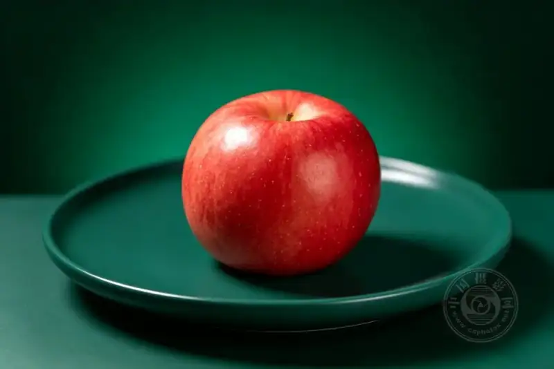
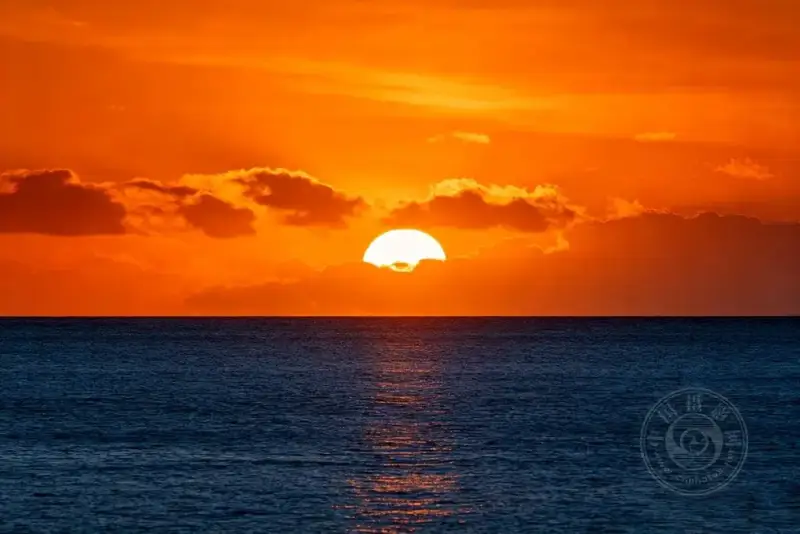
｜Try this:Shoot a close-up of an orange pumpkin resting on lush green grass. Green and orange are complements and naturally guide the eye to the subject.
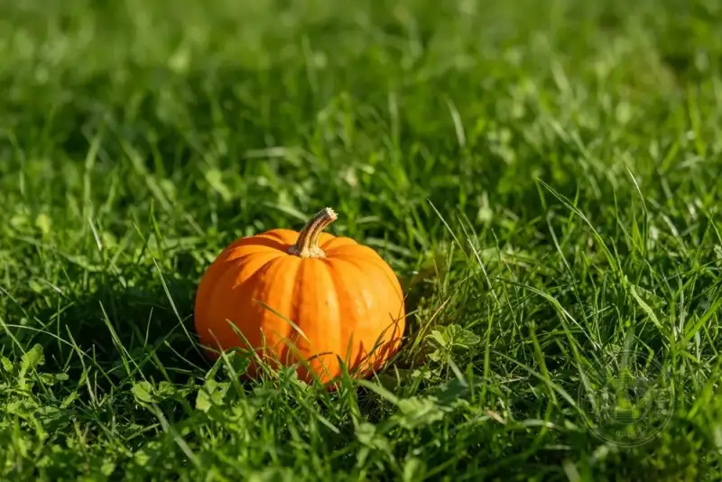
Analogous colors: the most comfortable visual experience
Analogous colors sit next to each other on the wheel, for exampleblue, blue-green, green, or red, red-orange, orange . They naturally feel harmonious, which helps build a unified, calm look. Smooth color transitions draw attention without overloading the senses.
Autumn leaves in nature (from deep red to light yellow) and the blues of water are typical uses of analogous colors.
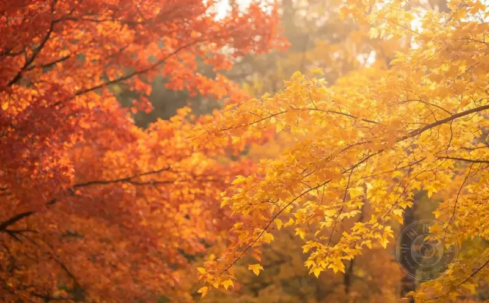
｜Try this: shoot a lavender field at sunset. The flowers grade from deep purple to light violet, and the sky shifts from violet to soft pink. Calm and peaceful.
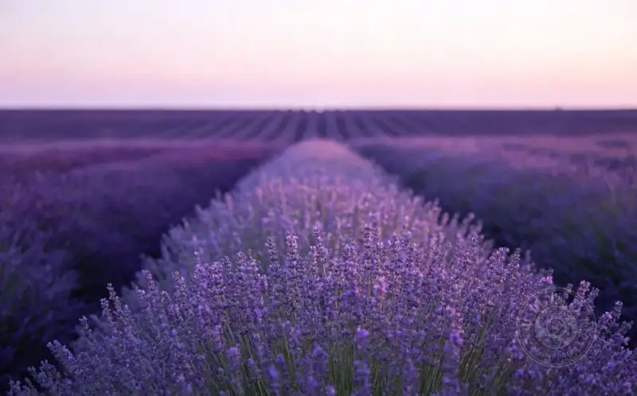
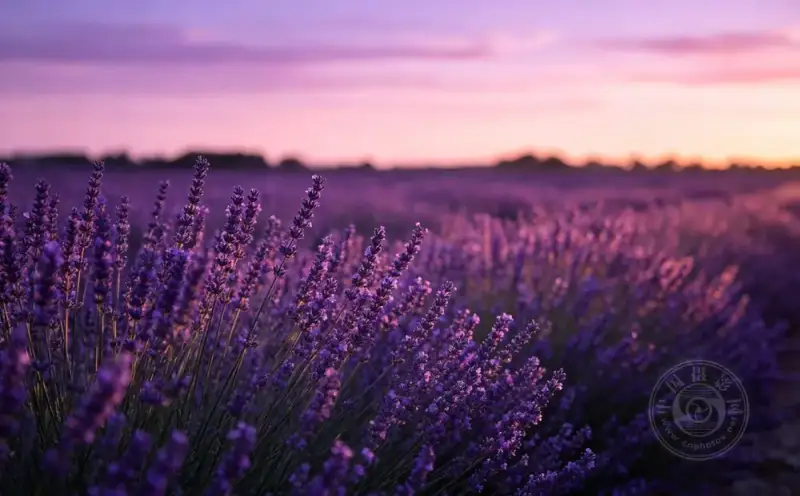
Triadic colors: the liveliest visual balance
Triadic colors are three colors evenly spacedevenly spaced on the wheel, for examplered, yellow, blue, or orange, green, purple. Used this way, the frame looks lively and balanced.
｜Street inspiration: a market stall full of red apples, yellow lemons, and blueberries. The color combo draws the eye at once and passes on a lively, fun mood.
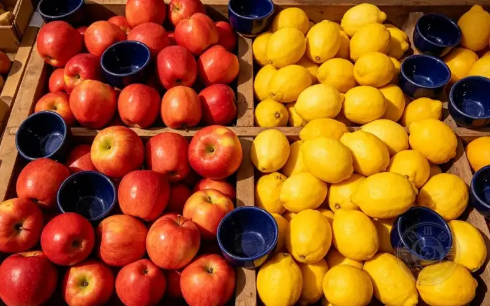
｜Portrait photography: have the subject wear a purple dress against a green background, then add orange accents for layers and avoid the flat feel of one tone.
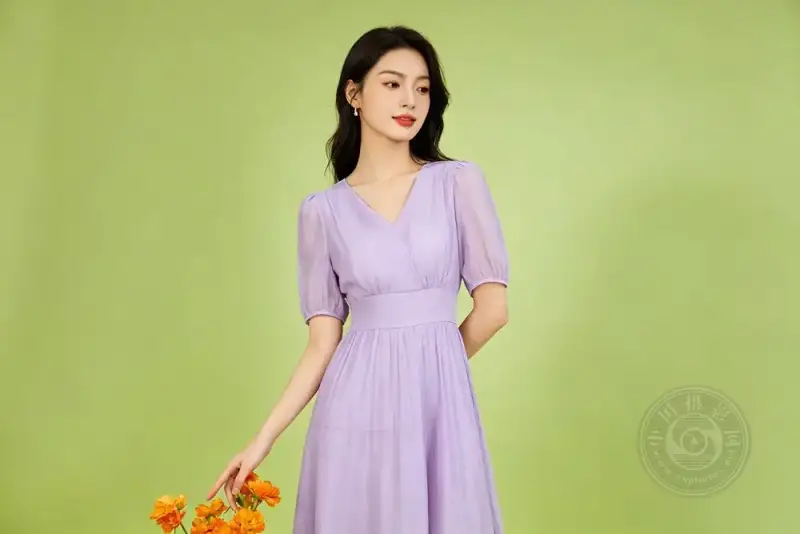
｜Still life: a red apple, a yellow lemon, and a blue bowl on a wooden table. A great triadic example, eye-catching yet balanced.
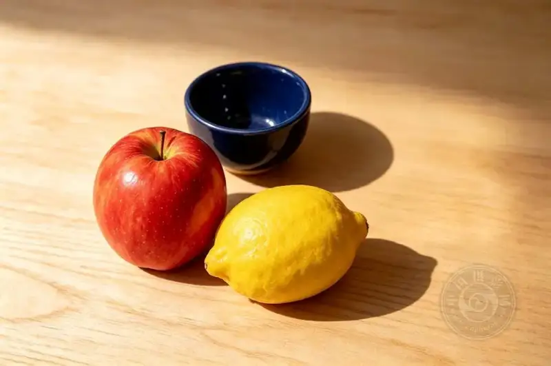
07 In closing: color is the language of emotion
Understanding color theory is vital for any photographer. It helps you make photos that draw people in, hold the eye, and stay with the viewer.
Different colors evoke emotion, guide the flow of the eye, and tell a story.
Boldly try tones and palettes, and see how they change the mood and focus of your photos.
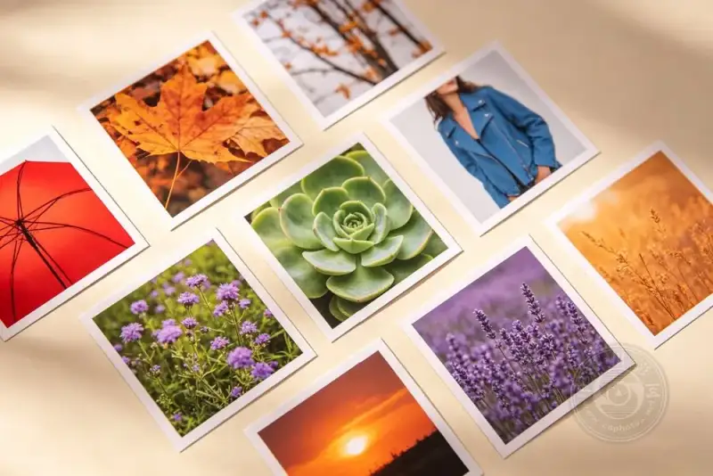
｜Today's prompt: in your most recent photo, which palette did you use? Share your work and thoughts in the comments.